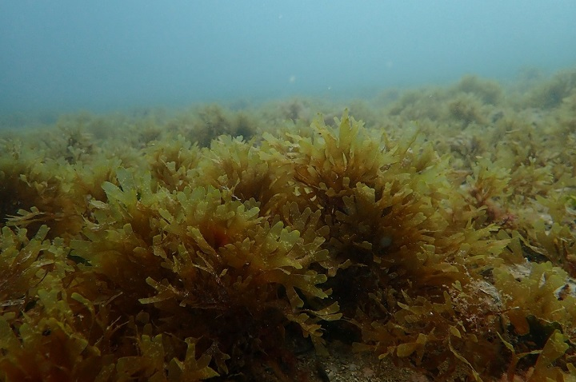
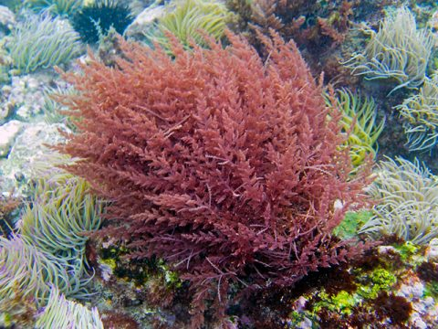
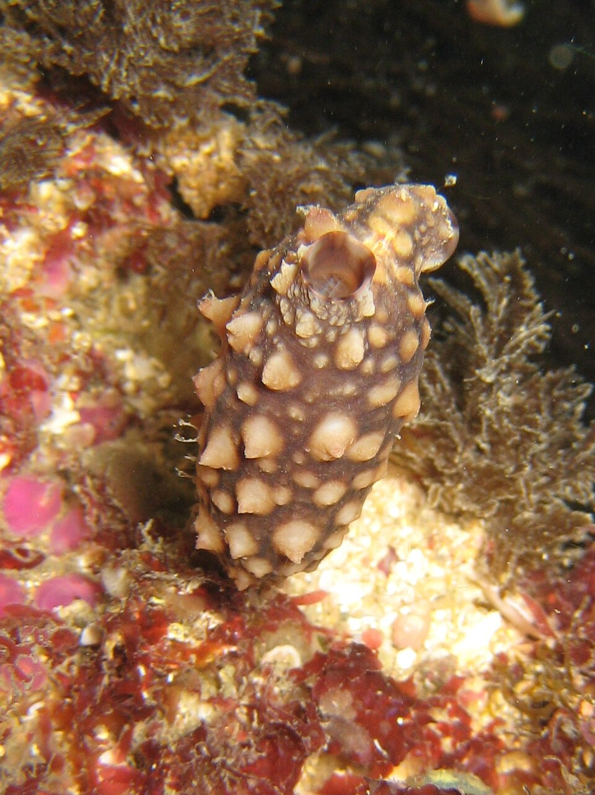

What is this guide for?
The Job
You are going to clean hulls or inspect sea chests. You need to identify dangerous species before scraping them. This guide shows what to look for and what to report in European waters.
Why It Matters
Marine pests hitch rides on ship hulls. Some have already established themselves in European ports, threatening biodiversity and aquaculture. Divers are our first line of defense.
Priority Levels
- INVASIVE Species listed in European legislation. Stop work and report to authorities within 24 hours.
- WATCH Emerging threat or pest already established regionally. Document and report.
Based on the European Alien Species Information Network (EASIN).
⚠️ Suspect an Invasive Species?
- STOP cleaning — halt work until advised by authorities.
- Take photos - close up and wide shot (use your hand or a ruler for scale).
- Note the location on the hull (depth, port/starboard, sea chest).
- DO NOT return the species to the sea — keep an intact specimen if possible.
- Report to your local maritime authority or environmental protection agency.
Filter Species by Primary Threat Region
Part 1: Invasive Hull Foulers (Primary Fouling)
These are the species that stick to the exterior of the hull and require mandatory reporting.

Invasive brown algae that forms dense floating mats and attaches strongly to hard surfaces like hulls.
How to Spot It
- Brown/yellowish algae
- Small air vesicles (look like berries)
- Can grow up to several meters long

Marine algae listed as invasive in Europe. Grows rapidly on hulls and port infrastructure.
How to Spot It
- Large brown fronds
- Distinct central vein (midrib)
- Very wavy and frilly base (sporophyll)

Colonial invertebrate that encrusts on hulls, creating gelatinous mats that smother other species.
How to Spot It
- Colonies form star-shaped patterns
- Gelatinous/rubbery texture
- Various colors (orange, yellow, green, purple)

Warm-water crustacean. Causes huge hydrodynamic drag on ships and spreads rapidly.
How to Spot It
- Calcareous cone shape
- Vertical purple or brown stripes/lines
- Direct primary fouling on metal/paint

A highly aggressive brown algae that covers massive areas of the rocky seabed. Transferred via anchors and fishing gear.
How to Spot It
- Yellowish-brown, flat, ribbon-like branches
- Forms extremely dense mats
- Attaches strongly to hard surfaces and ropes

An aggressive red algae officially listed in European legislation. Travels entangled in hull structures and equipment.
How to Spot It
- Pink to dark red color
- Barbed, harpoon-like hooks on branches
- Fluffy or feathery appearance underwater

A filter-feeding sea squirt that creates heavy fouling on hulls and docks, significantly increasing vessel drag.
How to Spot It
- Club or baseball bat shape with a stalk
- Leathery, bumpy outer skin
- Brownish to yellowish color

A highly invasive colonial tunicate that creates fleshy, mat-like colonies that smother native marine life.
How to Spot It
- Pale orange, cream, or off-white color
- Looks like dripping wax or vomit
- Leathery, veiny surface
Part 2: Niche Area Hitchhikers (Hidden)
These do not necessarily grow attached to the exterior hull. They hide in sea chests, suction grates, pipes, and bow thrusters, or are transported via ballast water.

Invasive crustacean that travels hidden in crevices or in ballast water. Migrates between the sea and freshwater estuaries.
How to Spot It
- Claws covered in dense 'wool' or 'hair'
- Olive-green to brown carapace

Bivalve mollusc frequently found in sediments that accumulate at the bottom of sea chests of ships stationary for a long time.
How to Spot It
- Oval and fragile (chalky) shell
- Long fleshy siphon (tube)

A highly invasive crab replacing native species in Northern Europe. Often transported in sea chests and ballast water.
How to Spot It
- Square-shaped carapace
- Claws with red/blood-like spots

A devastating comb jelly transported in ballast water. It caused the collapse of fisheries in the Black Sea.
How to Spot It
- Transparent, walnut-shaped body
- Lobed structure (no tentacles)
- Rows of cilia that diffract light (rainbow effect)

A voracious predator, originally from the Americas, now devastating bivalve populations in the Mediterranean.
How to Spot It
- Bright blue claws
- Olive green carapace with sharp lateral spines

A large predatory sea snail that feeds on native oysters and mussels. Larvae spread via ballast water.
How to Spot It
- Heavy, rounded shell (up to 18 cm)
- Bright orange coloring on the inside of the shell opening

The only marine fish on the EU list of invasive alien species. Highly venomous and dangerous to divers.
How to Spot It
- Eel-like body with four pairs of barbels around the mouth
- Brown-black body with two white/yellow horizontal stripes
Quick Reference — Europe
Based on the European Alien Species Information Network (EASIN).
🛑 Listed Invasives — Report to Authorities
| Group | Species | Quick ID |
|---|---|---|
| Algae | Japanese Wireweed (S. muticum) | Air vesicles like "berries", yellowish |
| Algae | Wakame (U. pinnatifida) | Marked central vein, wavy base |
| Algae | Asian Brown Weed (R. okamurae) | Yellow/brown, flat ribbons, dense mats |
| Algae | Harpoon Weed (A. armata) | Red/pink, harpoon-like barbed hooks |
| Crustacean | Striped Barnacle (A. amphitrite) | Cone with vertical purple/brown lines |
| Crustacean | Chinese Mitten Crab (E. sinensis) | Hairy claws, in sea chests |
| Crustacean | Asian Shore Crab (H. sanguineus) | Square carapace, red spots on claws |
| Crustacean | Atlantic Blue Crab (C. sapidus) | Blue claws, sharp lateral spines |
| Mollusc | Soft-shell Clam (M. arenaria) | Long siphon, in the mud of grates |
| Mollusc | Veined Rapa Whelk (R. venosa) | Large, heavy shell with orange interior |
| Other | Star Ascidian (B. schlosseri) | Gelatinous mat, small star shapes |
| Other | Club Tunicate (S. clava) | Leathery, stalked, club shape |
| Other | Carpet Sea Squirt (D. vexillum) | Pale orange, dripping wax appearance |
| Other | Sea Walnut (M. leidyi) | Transparent, lobed, rainbow cilia |
| Fish | Striped Eel Catfish (P. lineatus) | Eel-like, horizontal stripes, venomous |
Contacts and Reporting
National Competent Authorities
Under EU Regulation 1143/2014, each Member State has a designated authority (usually the Ministry of Environment or Coast Guard).
Action: Notify the local port authority immediately if a Union Concern species is detected.
IAS Europe App
Joint Research Centre (JRC)
The official European app for citizen science and professional reporting of Invasive Alien Species.
Download: Search "Invasive Alien Species Europe" on iOS or Android.
EASIN Network
European Alien Species Information Network
Explore the official database and map of alien species across Europe.
Website: easin.jrc.ec.europa.eu